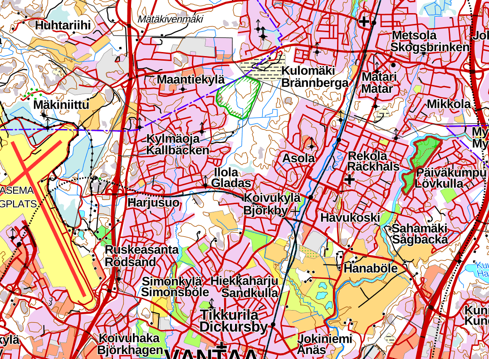
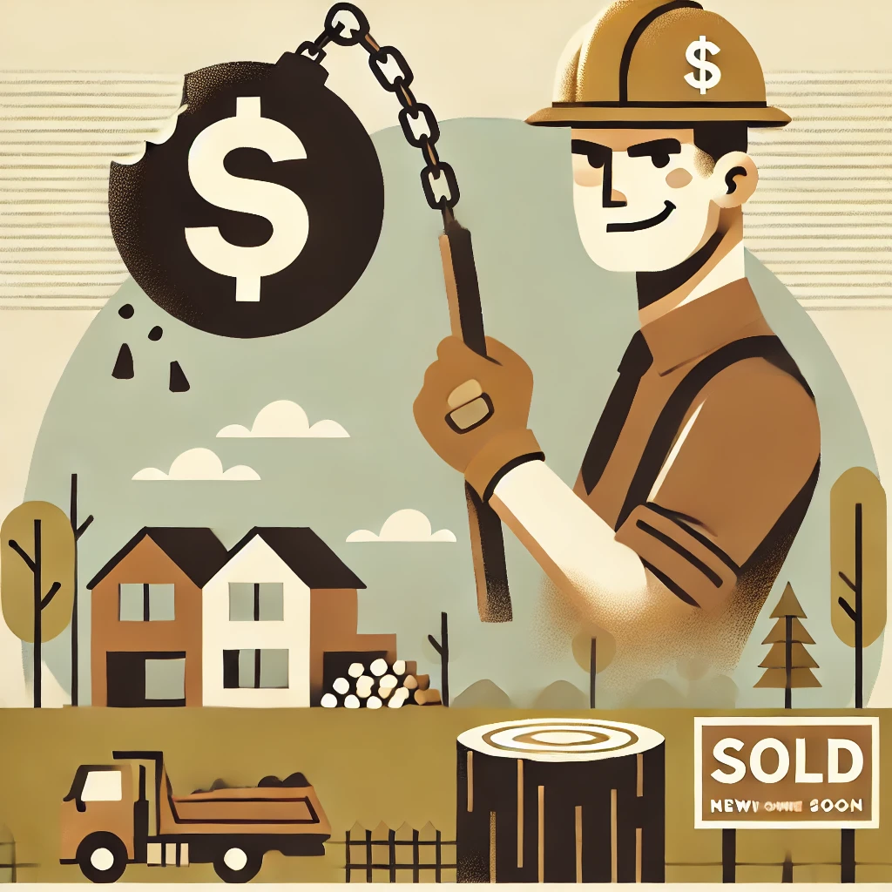
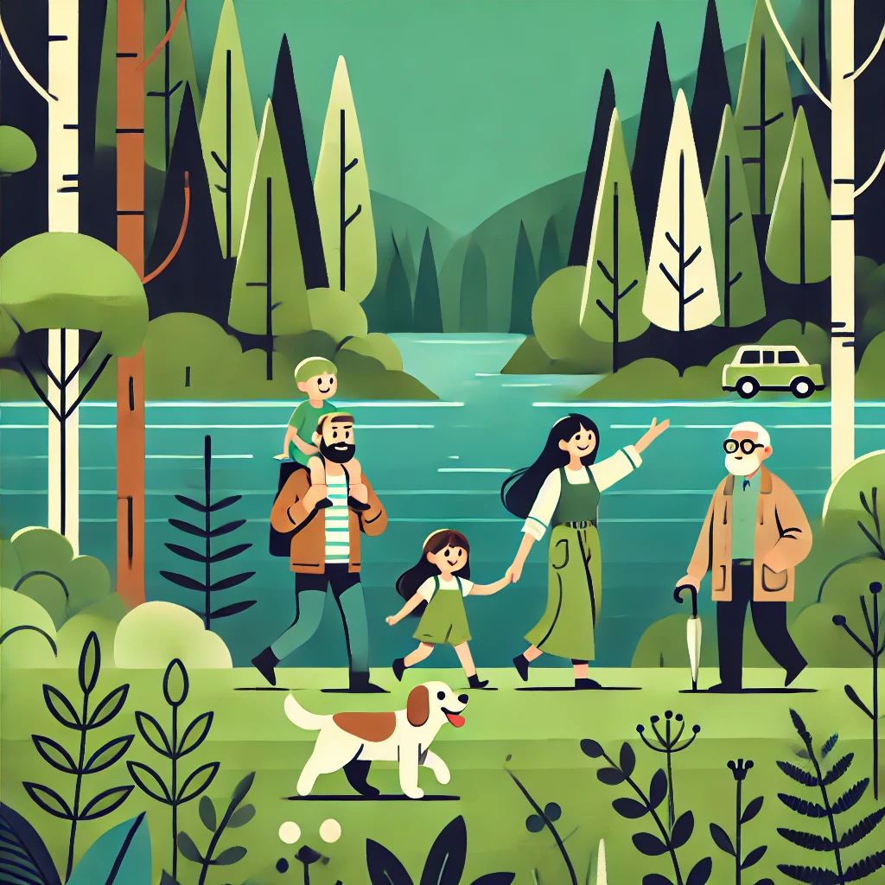

Alue pähkinänkuoressa
Alue on osa laajempaa, 20 hehtaarin kokoista metsäaluetta. Rantavyöhyke on luokiteltu luontoarvoiltaan arvokkaaksi alueeksi. Asemakaavamuutoksen toteutuessa rantaan jäisi vain 100-150 metrin leveydeltään kaistale vanhaa metsää.
Alue on nykyiselläänkin kapea, vain 300 metriä, ja sen poikki kulkee suosittu hiihto- ja kävelyreitti, joka tarjoaa esteettömän pääsyn metsäiselle alueelle. Alueen luontoarvot tulee nähdä kokonaisuutena. Jos metsä pirstotaan, seurauksena on eläinten elinalueiden supistuminen ja jokimetsän luonnonmaiseman pysyvä tuhoutuminen.
Keravanjokivarren metsä kokonaisuutena saattaisi myös soveltua METSO-suojeluohjelmaan.



- Vantaan kaupungin strategia on 500-600 pientaloa vuodessa ja tällä perustellaan tarvetta Päiväkummun pientalotontit asemakaavamuutokselle, joka mahdollistaisi rakentamisen viiden hehtaarin alueelle Keravanjokivarren metsään.
- "However beautiful the strategy, you should occasionally look at the results" - Sir Winston Churchill. Rakentaminen on yleisesti romahtanut ja nyt on täysin odottamattomassa tilanteessa hetki miettiä kaavoitusta järkevästi pitkäjänteisemmin myös raitiovaunuhanke huomioiden.
- Kaavoittajan mukaan alueella ei ole merkittäviä luontoarvoja.
- Paikan päällä tehdyssä riippumattomassa luontoselvityksessä todetaan alueella olevan monimuotoisia ja suojelutasoisia luontokohteita, joihin ei missään tapauksessa pitäisi rakentaa. Alue saattaisi myös soveltua Metso-suojeluohjelmaan.
- Kaavoittaja lupaa että menetetyt luontoarvon kompensoidaan.
- Lähimetsän arvoa asukkaille ei voi ”kompensoida” talousmetsiä toisaalla ennallistamalla.
- Kaupunki ajattelee menettävänsä rahaa ja asukkaista verotuloja mikälä kaavamuutosta ei tehdä.
- Kaupungin verotulot ovat samat olipa tontit muutamia kilometrejä mihin tahansa suuntaan. Käsillä ei ole kriittinen kaavoitusonglma, vaan yleisen taloustilanteen aiheuttama kysyntäonglma, mikä ei korjaannu rakentamalla asukkaille arvokkaaseen lähimetsään.
- 2 359
- Nimeä ulkoilevan väestön luontokohteen rakentamista vastustavassa kuntalaisaloitteessa. Lukumäärä kasvaa tietoisuuden lisääntyessä
- 8
- Äänestysaluetta on kävelymatkan päässä luontokohteesta
- 18 600
- Äänioikeutettua perheineen nauttii alueen ainutlaatuisista virkistysmahdollisuuksista